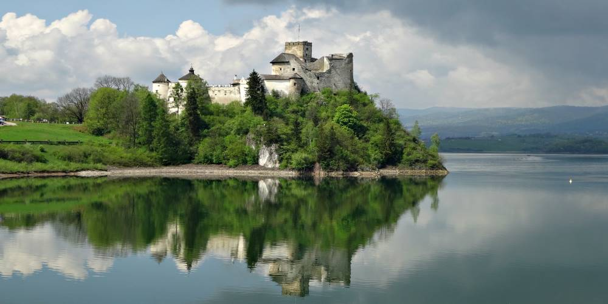
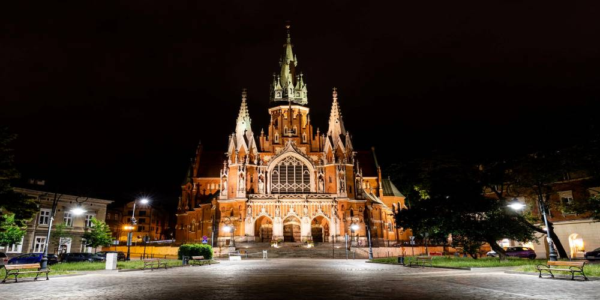
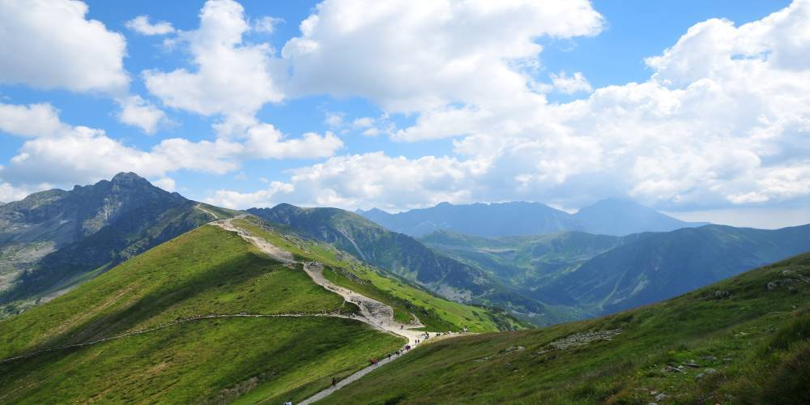
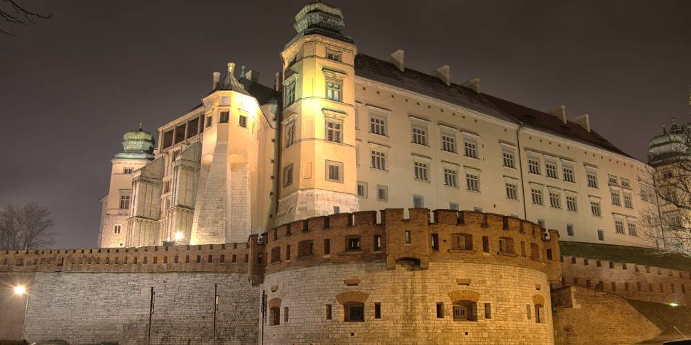

In the 21st century, Poland is one of the safest countries in Europe, frequently visited by tourists. Poland has a diversified natural environment, which is relatively unaffected by human development. Visitors are attracted by mountains, sea-coast with wide sandy beaches, and forests, lakes, rivers[1].
From the towering Tatra Mountains to the wild Baltic Sea, Poland is filled with vibrant cities known for their splendid heritage, mouthwatering cuisine and stunning architecture!
📍Fun Fact - Our Maroon team member Klaudia is from Poland 🎉
1 / 5

St. Mary’s Cathedral in Gdansk is the largest brick church in Europe, which can hold over 25,000 people.
2 / 5

The Niedzica Castle, known as one of the most picturesque castles in the country, adorns the covers of many books.
3 / 5

The St.Joseph's church was built between 1905 and 1909 and is known for it neo-gothic style.
4 / 5

The Tatra Mountains forms a natural border between Poland to the north and Slovakia to the south.
5 / 5

The Wawel Castle used to be a fortress to Poland's most important Monarchs, now a pride of the nation.